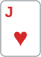
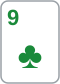

안녕하세요. 대회 후반, 스택 25BB 레벨이에요. 버블 전이라 칩 기준으로 셈해요. 오늘은 HJ에서 J♥J♠로 오픈했고, 이번에는 BB가 아니라 SB가 콜해 둘이 플랍을 봤어요.
플랍은 9♣6♣3♦. 오버페어로 c-bet을 걸었더니 SB가 체크레이즈를 했어요. 25BB에서 이런 레이즈를 받으면 "어차피 다 들어갈 돈, 지금 올인하자"는 생각이 들 수 있어요. 오늘 판의 질문은 바로 그거예요. 어차피 다 들어갈 돈이라면, 지금 내가 올인하는 것과 콜하고 턴을 보는 것은 같을까?
이 글에서 배울 것
- 상대가 내 올인을 무엇으로든 받는 자리에서는, 올인이 폴드 에퀴티를 하나도 만들지 못한다는 것
- 콜하고 턴을 보면 나쁜 카드에 접을 선택지가 생기고, 그 선택지에도 값이 있다는 것
- 그 값을 턴 카드를 좋은 카드·나쁜 카드로 나눠 셈하는 법
오늘의 한 판
Hero (HJ · 스택 25BB) · 상대 (SB · 스택 25BB) · 블라인드 0.5/1, BB 앤티 1BB · 대회 후반

프리플랍
UTG·LJ 폴드 → Hero(HJ) 2.2BB 오픈 → CO·BTN 폴드 → SB 콜 → BB 폴드. 팟 6.4BB
팟은 Hero와 SB의 2.2BB씩, BB의 블라인드 1BB와 앤티 1BB예요. 접은 BB가 낸 2BB는 그대로 팟에 남아요. 두 사람 모두 22.8BB가 남아요.
플랍 · 팟 6.4BB

SB 체크 → Hero 3.2BB c-bet → SB 10BB로 체크레이즈 → Hero는 접을까, 콜할까, 올인할까? Hero 콜(6.8BB 더). 팟 26.4BB, 남은 스택 12.8BB
Hero는 J 오버페어예요. 클럽이 두 장이라 플러시 드로우가 가능한 보드예요.
턴 · 팟 26.4BB


2♥. SB 12.8BB 올인 → Hero 콜. SB는 A♣5♣(플러시 드로우 + 4가 오면 2-3-4-5-6 스트레이트)였어요. 리버 K♠로 Hero가 이겼어요.
결론부터 말할게요. 체크레이즈에는 콜, 턴 2♥ 올인에도 콜이에요. 플랍에서 바로 올인하는 것도 접는 것보다는 낫지만, 콜이 더 나아요. 오늘 가정한 SB 체크레이즈 레인지 상대로 J♥J♠는 약 39.04%예요. 지금 올인하면 SB는 무엇으로든 받으니(필요 약 24.62%), 올인은 그냥 '지금 끝까지 보기'와 같고 그 값은 약 +0.7BB예요. 콜하고 턴을 보면 클럽 10장이 떨어질 때 접을 수 있어서, 같은 판의 값이 약 +2.24BB로 올라가요(SB가 턴에 늘 올인한다는 가정).
오늘의 가정
레인지는 설명을 위한 가정이에요(솔버 결과 아님).
- SB 콜 레인지(HJ 오픈 상대): 22-TT, A2s-AJs, KTs+, QTs+, J9s+, T9s, 98s, 87s, 76s, 65s, ATo-AJo, KQo. JJ+·AQ+는 3벳한다고 봐요. J♥J♠를 빼면 162콤보, 플랍 카드까지 빼면 145콤보
- SB 체크레이즈 레인지: 셋(99·66·33) 9콤보, 87s(양방 드로우) 4콤보, 그리고 클럽 두 장 핸드 14콤보(A♣x♣ 8콤보, K♣Q♣·K♣J♣·K♣T♣·Q♣J♣·Q♣T♣·J♣T♣). 합쳐서 27콤보
- SB는 Hero의 올인을 언제나 받고, Hero가 콜하면 턴에 무슨 카드가 와도 올인한다고 봐요
- 남은 셈은 모두 이 가정 위에 있어요
1단계. 프리플랍과 플랍 c-bet: 여기까지는 분명해요
J♥J♠는 HJ 오픈에 충분하고, SB가 콜한 레인지에는 JJ보다 높은 페어가 없어요(3벳한다고 봤으니까요).
플랍 SPR = 22.8 ÷ 6.4 = 약 3.56 J♥J♠의 SB 플랍 레인지(145콤보) 상대 에퀴티 = 약 74.01%
c-bet은 밸류예요. A10에서 본 대로 SPR 3~4면 탑페어 이상은 스택을 다 넣을 계획으로 시작할 수 있는 깊이고, 오버페어는 그 계획 안에 있어요. 크기는 팟 절반인 3.2BB로 잡았어요.
이게 무슨 뜻이냐면
여기까지의 질문은 "J♥J♠가 SB 레인지 전체보다 강한가"였고, 답은 분명했어요. 체크레이즈가 나오는 순간 상대는 145콤보가 아니라 27콤보가 돼요.
2단계. 체크레이즈를 받다: 레인지가 바뀌었어요
SB가 10BB로 올렸어요. Hero가 더 낼 돈은 6.8BB예요.
콜 필요 에퀴티 = 6.8 ÷ 26.4 = 약 25.76% J♥J♠의 SB 체크레이즈 레인지(27콤보) 상대 에퀴티 = 약 39.04%
J♥J♠는 74.01%에서 39.04%로 내려왔어요. 체크레이즈 레인지의 절반 이상이 플러시 드로우와 양방 드로우라 아직 앞서긴 하지만, 셋 9콤보에는 크게 뒤져요. 그래도 접을 자리는 아니에요. 남은 질문은 콜이냐 올인이냐예요.
이게 무슨 뜻이냐면
A12에서 본 것처럼 원페어는 레이즈를 받으면 상대 레인지가 좁아져요. 오늘은 그 좁아진 레인지가 드로우 쪽으로 기울어 있어서, 오버페어가 아직 버틸 수 있어요. 접기는 빠지고, 콜과 올인 둘 중 무엇이 나은가가 남아요.
3단계. 올인하면: 폴드 에퀴티가 없어요
Hero가 지금 22.8BB 전부를 넣으면 팟은 39.2BB가 돼요. SB는 체크레이즈로 이미 10BB를 냈으니, 남은 12.8BB를 더 내고 최종팟 52BB를 놓고 싸워요.
SB 필요 에퀴티 = 12.8 ÷ 52 = 약 24.62%
4단계에서 볼 턴 콜 가격과 같은 값인데, 두 사람 남은 돈이 12.8BB로 같아서예요. SB의 체크레이즈 레인지에서 가장 약한 87s도 이 가격보다 넉넉히 앞서요. 그래서 오늘 가정대로 SB는 무엇으로든 받아요. R24에서 본 체크레이즈 올인은 상대가 접어 주는 몫이 핵심이었는데, 여기에는 그 몫이 없어요. 올인은 그냥 지금 리버까지 보기예요.
Hero 필요 에퀴티 = 19.6 ÷ 52 = 약 37.69% 이길 때 몫 = 39.04% × 32.4 = 약 12.65BB 질 때 몫 = 60.96% × 19.6 = 약 11.95BB 올인 → 12.65 − 11.95 = 약 +0.7BB(접기 대비)
올인은 접는 것보다 조금 나아요. 에퀴티 약 39.04%가 필요 약 37.69%를 겨우 넘거든요.
이게 무슨 뜻이냐면
상대가 다 받는 올인은 결과를 앞당기는 것일 뿐, 새로 얻는 게 없어요. 그리고 그만큼 나중에 접을 기회를 미리 버려요.
4단계. 콜하면: 턴을 보고 정할 수 있어요
콜하면 팟 26.4BB, 남은 스택 12.8BB예요.
콜 뒤 SPR = 12.8 ÷ 26.4 = 약 0.48
SPR이 이렇게 낮으면 남은 돈은 거의 '정해진 돈'이에요. 하지만 한 가지가 달라요. Hero는 턴 카드를 보고 남은 12.8BB를 넣을지 정할 수 있어요. 턴에 SB가 올인하면 Hero가 콜하는 가격은 이래요.
턴 콜 필요 에퀴티 = 12.8 ÷ 52 = 약 24.62%
턴 카드 47장을 둘로 나누기
남은 카드 47장을 한 장씩 대 보면, J♥J♠의 SB 레인지 상대 에퀴티는 이렇게 갈려요.
- 좋은 턴 37장(클럽이 아닌 카드, 그리고 J♣): 모두 24.62%를 넘으니 콜
- 나쁜 턴 10장(J♣을 뺀 클럽 2♣·3♣·4♣·5♣·7♣·8♣·T♣·Q♣·K♣·A♣): 모두 24.62%에 못 미치니 폴드
클럽이 떨어지면 그 카드를 쥔 콤보를 뺀 남은 클럽 핸드가 모두 플러시가 되고, 셋도 그대로 남아서 J♥J♠는 거의 이기지 못해요. 이때 접으면 플랍 콜 6.8BB만 잃고 끝나요.
카드마다 나올 확률이 조금씩 달라요
턴 카드는 SB 손에 있을 수도 있어요. A♣이 턴에 나오려면 SB가 A♣을 쥐고 있지 않아야 하죠. 그래서 47장을 똑같이 1장씩 치지 않고, (SB 콤보, 턴 카드) 짝으로 셌어요. SB 콤보 하나마다 남은 턴 카드는 52 − 2 − 3 − 2 = 45장이에요.
모든 짝 = 27 × 45 = 1215가지 나쁜 턴 짝 = 242가지 → 242 ÷ 1215 = 약 19.92% 좋은 턴 짝의 평균 에퀴티 약 46.31%, 나쁜 턴 짝의 평균 약 9.79%
SB가 클럽을 많이 쥐고 있어서, 클럽 턴은 47장 중 10장이라는 비율보다 조금 덜 나와요. 이렇게 세면 턴별 에퀴티를 모두 섞은 값이 2단계의 약 39.04%와 정확히 같아져요.
콜의 값
좋은 턴에서는 끝까지 가요. 좋은 턴 짝의 평균 에퀴티로 셈하면 이래요.
이길 때 몫 = 46.31% × 32.4 = 약 15.01BB 질 때 몫 = 53.69% × 19.6 = 약 10.52BB 좋은 턴 → 15.01 − 10.52 = 약 +4.48BB
나쁜 턴에서는 접고 6.8BB를 잃어요. 둘을 나올 확률대로 섞으면:
좋은 턴 몫 = 80.08% × 4.48 = 약 3.59BB 나쁜 턴 몫 = 19.92% × 6.8 = 약 1.35BB 콜 → 3.59 − 1.35 = 약 +2.24BB(접기 대비)
올인 약 +0.7BB < 콜 약 +2.24BB → 콜
차이는 어디서 나오나
좋은 턴에서는 콜도 올인도 끝까지 가니 값이 같아요. 다른 건 나쁜 턴뿐이에요. 올인은 그 턴에서도 12.8BB를 더 넣은 채 쇼다운하고, 콜은 접어요.
나쁜 턴에서 올인이 돌려받는 몫 = 9.79% × 52 = 약 5.09BB 나쁜 턴에서 올인이 콜보다 더 잃는 돈 = 12.8 − 5.09 = 약 7.71BB 차이 = 19.92% × 7.71 = 약 1.54BB (2.24 − 0.7 = 1.54)
이게 무슨 뜻이냐면
R22에서 본 '턴 카드 한 장을 보고 스택 전부를 정할 권리'가 오늘도 콜 쪽에 있어요. 다른 점은 올인 쪽이에요. R22에서는 올인에 접어 주는 핸드가 58콤보 있어서 올인도 약 +4.07BB였고, 그래도 콜 길 약 +6.15BB가 나았어요. 오늘은 접어 주는 몫이 하나도 없어서, 콜과 올인의 차이가 통째로 나쁜 턴 10장에서만 나와요.
5단계. 결과: 2♥, 그리고 A♣5♣
턴은 2♥, 좋은 턴이었어요. SB가 올인했고 Hero는 계획대로 콜했어요. SB는 A♣5♣로, 플러시 드로우에 4가 오면 2-3-4-5-6 스트레이트까지 생긴 핸드였어요. 리버 K♠는 둘 다 아니라 Hero가 이겼어요.
턴 2♥는 A♣5♣에게 4라는 아웃을 더 만들어 준 카드였어요. 4♣은 원래 플러시 아웃이니, 새로 늘어난 건 4♠·4♥·4♦ 세 장이에요. 그래도 2♥는 '좋은 턴'에 들어가요. 턴마다 에퀴티는 조금씩 다르고, 4단계의 약 46.31%는 좋은 턴 짝을 모두 합친 평균이에요.
왜 그럴까: 폴드 에퀴티가 없는 올인은 선택지를 버리는 일이라서
올인의 이득은 두 길이었어요
A22에서 본 세미블러프의 "두 번 이긴다", R24에서 본 체크레이즈 올인처럼 올인은 접게 해서 이기는 길과 쇼다운으로 이기는 길이 있어요. 오늘 SB는 무엇으로든 받으니 첫 번째 길이 통째로 없어요. 남은 건 쇼다운 길뿐이고, 그건 콜하고 끝까지 가도 똑같이 얻을 수 있어요.
콜은 정보를 한 장 더 사요
콜하면 턴 카드를 보고 나서 마지막 12.8BB를 넣을지 정해요. SB가 어차피 턴에 올인한다는 오늘 가정에서는 그 정보가 공짜예요. SB가 어차피 올인할 거라면, Hero는 그 올인에 콜할지 말지를 턴 카드를 알고 고르게 돼요.
언제 올인이 다시 나아지나
상대가 내 올인에 접는 핸드를 갖고 있으면 첫 번째 길이 다시 열려요. 다만 그 핸드가 콜 길에서는 어떻게 움직이는지까지 같이 봐야 콜과 비교할 수 있어요. 오늘 가정에는 그런 핸드가 없었어요.
이게 무슨 뜻이냐면
낮은 SPR에서 "어차피 다 들어간다"는 말은 반만 맞아요. 어느 카드에서 다 들어가느냐를 고를 수 있으면, 그 고르는 권리에도 값이 있어요.
자주 하는 실수
실수 1. "25BB 체크레이즈엔 무조건 올인" 오늘 SB는 무엇으로든 받아서 올인은 폴드를 하나도 얻지 못했어요. 올인 약 +0.7BB, 콜 약 +2.24BB였어요. 대신 올인하기 전에 상대가 내 올인에 접을 핸드가 있는지부터 물어요.
실수 2. "콜했으면 턴엔 무조건 콜" 콜의 값은 나쁜 턴 10장에서 접는 데서 나와요. 클럽이 떨어졌는데도 '이미 많이 넣었으니' 콜하면, 콜과 올인의 차이가 사라져요. 대신 콜할 때 어떤 턴에서 접을지를 미리 정해 둬요.
실수 3. "오버페어니 체크레이즈엔 앞서 있다" 체크레이즈 레인지 상대로 J♥J♠는 약 39.04%예요. 셋 9콤보에는 크게 뒤지고, 앞서는 건 드로우 덕분이에요. 대신 체크레이즈를 받으면 레인지를 셋·드로우로 나눠 다시 세요.
"SB가 턴에 클럽이 안 떨어지면 체크한다면요?"
오늘은 SB가 턴에 늘 올인한다고 단순화했어요. SB가 드로우를 놓친 턴에 체크한다면, Hero는 그때 남은 12.8BB를 걸어 SB가 드로우로 콜할지 정하게 할 수 있어요. 그래도 판정의 뼈대는 같아요. 콜하면 턴을 본 뒤 고를 수 있고, 올인하면 그 선택을 미리 버려요. 가정이 바뀌면 숫자는 바뀌지만, 나쁜 턴에 접을 권리가 콜 쪽에 있다는 건 그대로예요.
선생님의 한마디
체크레이즈를 받으면 먼저 "상대가 내 올인에 접을 핸드가 있나"를 물어요. 없으면 콜하고, 접을 턴 카드를 미리 정해 둬요. 오늘은 J♣을 뺀 클럽 10장이었어요. 그 카드가 떨어지면 6.8BB만 내고 나오고, 나머지 카드에서는 끝까지 가요.
연습 문제
학습툴 팟오즈 계산기로 필요 에퀴티를 확인할 수 있어요. 에퀴티는 문제에 준 값을 써요.
문제 1. 본문과 같은 판이에요. 다른 건 하나, SB 체크레이즈 레인지에 A♠T♠·A♥T♥·A♦T♦ 3콤보가 블러프로 더 들어 있어요. 그래서 SB는 30콤보예요. J♥J♠는 이 3콤보 상대로 약 84.24%라, SB는 Hero 올인을 받을 가격(약 24.62%)에 못 미쳐 이 3콤보는 접어요. 나머지 27콤보는 본문처럼 다 받아요(J♥J♠ 약 39.04%). Hero가 콜하면 SB는 이 3콤보까지 턴에 늘 올인하고, 본문 방법으로 센 콜 길 값은 약 +3.77BB예요. Hero는 지금 올인할까요, 콜할까요?
정답 보기
블러프가 접으면 Hero는 지금 팟 19.6BB를 가져와요. 받는 27콤보 쪽은 본문 3단계의 올인과 같아요.
접을 때 몫 = 3 ÷ 30 × 19.6 = 약 1.96BB 받을 때 몫 = 27 ÷ 30 × 0.7 = 약 0.63BB 올인 → 1.96 + 0.63 = 약 +2.59BB 올인 약 +2.59BB < 콜 약 +3.77BB → 콜
접어 주는 핸드가 생기자 올인 값이 약 +0.7BB에서 약 +2.59BB로 올랐지만, 콜 길도 약 +2.24BB에서 약 +3.77BB로 함께 올랐어요. 이 3콤보가 콜 길에서는 턴에 12.8BB를 더 넣고 J♥J♠에게 크게 뒤진 채 쇼다운하기 때문이에요. 접어 주는 핸드라도, 기다리면 돈을 더 넣는 핸드라면 그 몫은 콜 쪽이 더 크게 가져가요. 올인이 앞서려면 그 핸드들이 콜 길에서는 돈을 넣지 않거나, 턴에 맞아 이기는 몫이 커야 해요.
문제 2. 이번엔 SB가 10BB로 올리지 않고 Hero c-bet 3.2BB에 바로 22.8BB 올인했어요. 이 SB는 플러시 드로우를 A♣x♣로만 올인하고, K♣Q♣ 같은 다른 클럽 핸드는 그냥 콜하거나 접는 사람이에요. 올인 레인지는 셋 9콤보, 87s 4콤보, A♣x♣ 8콤보로 21콤보, J♥J♠의 에퀴티는 약 35.04%예요. 콜? 폴드?
정답 보기
Hero가 더 낼 돈 = 22.8 − 3.2 = 19.6 필요 에퀴티 = 19.6 ÷ 52 = 약 37.69% 에퀴티 약 35.04% < 필요 약 37.69% → 폴드
빠진 6콤보(K♣Q♣·K♣J♣·K♣T♣·Q♣J♣·Q♣T♣·J♣T♣)는 J♥J♠와 거의 반반인 드로우예요(K♣Q♣처럼 오버카드 둘이면 오히려 J♥J♠가 조금 뒤져요). 판정을 뒤집은 건 이 핸드들 자체보다, 이들이 빠지면서 올인 레인지 속 셋 9콤보의 비중이 커진 거예요. SB가 먼저 다 넣으면 Hero에게는 턴을 보고 정할 권리도 없어요. 오버페어가 올인을 받을 때는 약한 드로우가 몇 콤보 섞였는지가 판정을 가를 수 있어요.
핵심 정리
- 체크레이즈를 받으면 상대 레인지를 다시 세요. J♥J♠는 약 74.01%에서 약 39.04%가 됐어요
- 상대가 내 올인을 무엇으로든 받는 자리에서는, 콜과 올인의 차이가 나쁜 턴에서만 생겨요(오늘 약 1.54BB)
- 콜하면 턴 카드를 보고 정할 권리가 생겨요. 오늘은 그 권리로 콜(약 +2.24BB)이 올인(약 +0.7BB)보다 나았어요
- 턴 카드를 셀 때는 상대가 쥔 카드까지 빼고 (콤보, 턴) 짝으로 세요
- 올인이 앞서려면 상대 레인지에 내 올인에 접을 핸드가 있어야 해요
정리하며
오늘은 대회 후반 25BB, HJ J♥J♠로 SB의 체크레이즈를 받았어요. 체크레이즈 레인지 상대로 J♥J♠는 약 39.04%라 접을 자리는 아니었고, SB가 무엇으로든 받는 자리라 올인은 폴드를 하나도 얻지 못했어요. 콜하고 턴을 보면 클럽 10장에서 접을 수 있어, 같은 판이 더 값졌어요.
다음 글 R29에서는 스택 30BB에서 드로우를 들고 플랍 올인을 받는 판을 봐요. 오늘은 오버페어가 드로우의 레이즈를 받았다면, 다음은 자리를 바꿔 드로우가 올인을 받을 때 몇 %가 있어야 콜할 수 있는지 셈해요.
AI 작성 · 숫자는 계산 검증 · 가정 레인지 기준(솔버 결과 아님) · 토너 BB 앤티 1BB · 남은 베팅이 있어 BB 금액은 계산용